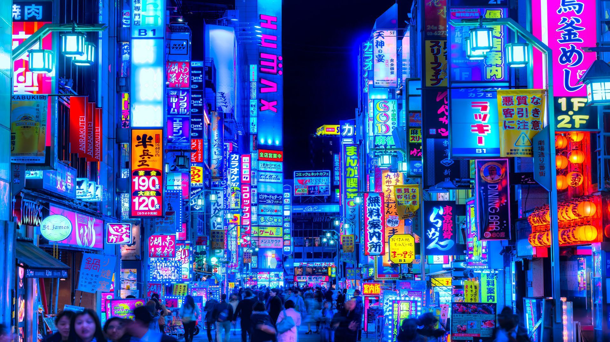
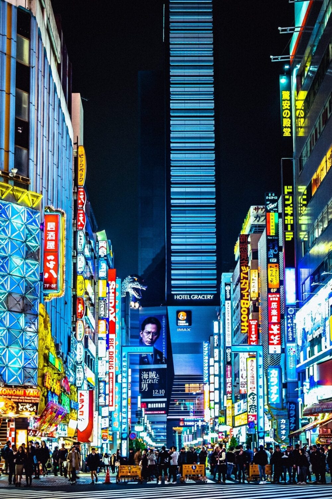
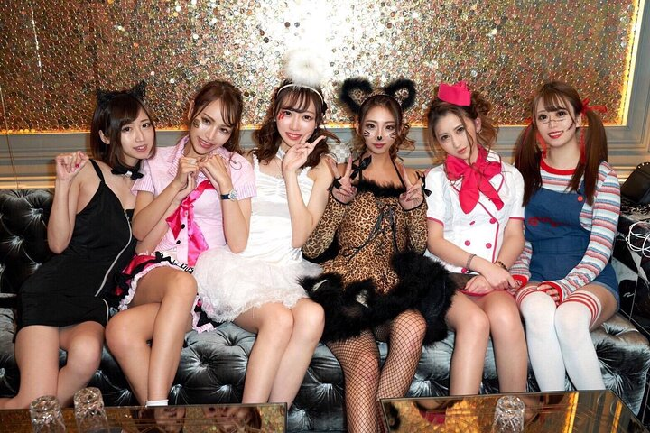
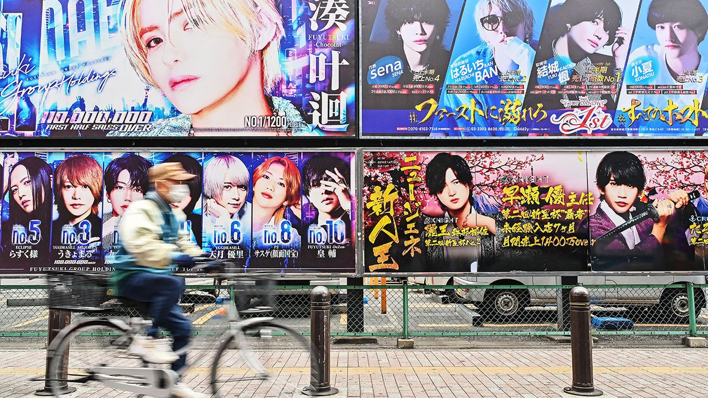
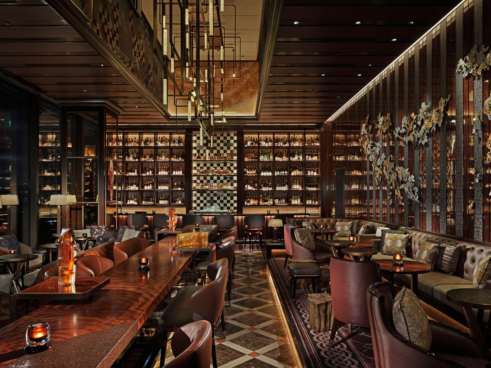
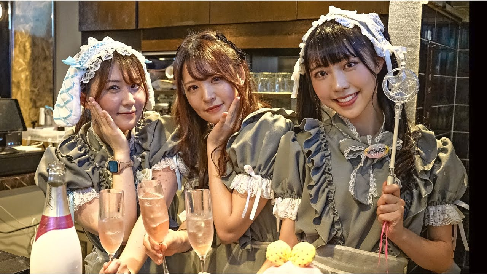
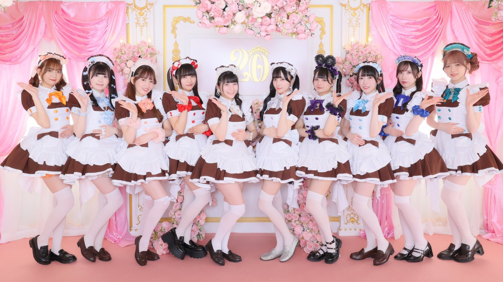

Tokyo transforms after sunset into one of the world's most vibrant and diverse nightlife destinations. From neon-lit streets to intimate venues, the city offers an incredible array of after-dark entertainment that reflects both traditional Japanese hospitality culture and modern urban energy. Whether you're seeking sophisticated cocktails, energetic dancing, or unique cultural experiences, Tokyo's nightlife scene has something for everyone.

Tokyo's nightlife is centered around several key districts, each with its own distinct character. Shibuya pulses with youthful energy and massive clubs, while Ginza offers upscale sophistication. Shinjuku's Kabukicho district serves as the city's primary entertainment quarter, bustling with activity until dawn. Roppongi attracts an international crowd with its mix of bars, clubs, and late-night dining options.

Cabaret clubs represent a unique aspect of Japanese nightlife culture. These establishments feature hostesses who engage in conversation with patrons while serving drinks and snacks. The atmosphere is typically upscale and elegant, with beautifully dressed hostesses providing personalized attention and entertainment through conversation, karaoke, and games. These venues operate on an hourly fee system, with additional charges for drinks and food.

Host clubs are the male counterpart to cabaret clubs, where well-dressed male hosts entertain female clientele. These venues gained popularity in the 1960s and have become an integral part of Tokyo's nightlife landscape. Hosts are known for their carefully styled appearances, conversational skills, and ability to make guests feel special and entertained. The atmosphere is often luxurious, with elaborate décor and premium service.

Japanese lounges offer a more relaxed alternative to the traditional hostess club experience. These venues typically feature comfortable seating, ambient lighting, and a focus on conversation over drinks. Many lounges employ bilingual staff and cater to both Japanese and international clientele. The service style is less formal than traditional hostess clubs, making them more accessible to newcomers to Tokyo's nightlife scene.

Girls bars represent a more casual and accessible form of hostess entertainment. These venues feature female bartenders who serve drinks while engaging in friendly conversation with customers. Unlike traditional cabaret clubs, girls bars have a more relaxed atmosphere with counter seating similar to a regular bar. The staff wear casual or themed outfits rather than formal evening wear, and the pricing is generally more affordable. Many girls bars in areas like Shibuya and Shinjuku cater to both Japanese and international customers.

Concept cafes are a uniquely Japanese phenomenon that blends dining with themed entertainment. These venues feature staff dressed in various costumes or personas, from maid cafes (メイドカフェ) to anime-themed establishments. While many operate during daytime hours, several extend into the evening, creating a bridge between cafe culture and nightlife. Popular themes include maid cafes, butler cafes, cat cafes with hostess service, and anime character-themed venues. The experience focuses on immersive entertainment rather than traditional bar service.

Muscle bars are a specialized type of entertainment venue where muscular male staff serve drinks and provide entertainment through conversation and sometimes performances. These establishments cater primarily to female clientele and the LGBTQ+ community, offering a unique twist on traditional host club culture. The atmosphere is often playful and energetic, with staff who may perform dance routines or physical demonstrations. Notable muscle bars can be found in areas like Ni-chome in Shinjuku, Tokyo's prominent LGBTQ+ district.
Tokyo's club scene is incredibly diverse, ranging from intimate basement venues to massive multi-floor complexes. Electronic music dominates, with world-renowned DJs regularly performing at venues like Womb, Ageha, and Contact. These clubs feature state-of-the-art sound systems, impressive lighting displays, and dance floors that stay packed until the early morning hours.
The city's club culture embraces various electronic music genres, from techno and house to drum and bass and experimental sounds. Many venues also host themed nights, featuring specific genres or guest DJs from around the world.
Many Tokyo venues offer "nomihoudai" (all-you-can-drink) and "tabehoudai" (all-you-can-eat) options, allowing patrons to enjoy unlimited drinks and food for a set price and time period. This system is particularly popular at izakayas, karaoke boxes, and some clubs.
No discussion of Tokyo nightlife would be complete without mentioning karaoke. Private karaoke rooms are available throughout the city, offering everything from basic setups to luxury suites with premium sound systems and extensive song libraries in multiple languages.
Tokyo's nightlife scene is complemented by incredible late-night dining options. From 24-hour ramen shops to upscale sushi counters that stay open until dawn, the city ensures that night owls never go hungry.
Understanding Japanese nightlife etiquette enhances the experience significantly. Bowing when greeting staff, removing shoes when required, and showing respect for the venue's atmosphere are important. In hostess clubs and host clubs, engaging in polite conversation and showing appreciation for the service is expected.
While many venues in international districts like Roppongi have English-speaking staff, learning basic Japanese phrases can greatly enhance your experience. Many establishments appreciate when foreign visitors make an effort to communicate in Japanese.
Tokyo nightlife can range from budget-friendly to extremely expensive. Cover charges, drink prices, and service fees vary significantly between venues. It's advisable to understand the pricing structure before entering any establishment, particularly in upscale areas like Ginza or traditional entertainment districts.
Tokyo is generally very safe for nightlife activities, with low crime rates and reliable public transportation. However, it's important to be aware of your surroundings, especially in busy entertainment districts. The last trains typically run around midnight, with night buses and taxis available for later transportation.
Many venues have dress codes, particularly upscale clubs and lounges. Smart casual attire is generally acceptable, but some venues may require more formal dress.
Navigating Tokyo's complex and diverse nightlife scene can be overwhelming for first-time visitors. From understanding venue etiquette to finding the right establishments for your preferences, having local expertise makes all the difference in creating memorable experiences.
We offer comprehensive Tokyo nightlife tours and personalized guidance services to help you discover the best of what the city has to offer after dark. Our experienced guides provide insider access to exclusive venues, help with language barriers, and ensure you understand the cultural nuances that make Tokyo's nightlife so unique.
Whether you're interested in traditional hostess clubs, modern dance venues, themed concept cafes, or want to explore the full spectrum of Tokyo's entertainment districts, our customized tours cater to your specific interests and comfort level.
Contact us today to plan your perfect Tokyo nightlife adventure and discover the city's hidden gems with confidence and local expertise.
Whether you're interested in experiencing traditional Japanese entertainment culture or dancing until dawn at a cutting-edge club, Tokyo's nightlife offers unforgettable experiences that showcase the city's unique energy and hospitality. Each venue type provides its own distinct atmosphere and cultural insights, making Tokyo one of the world's most intriguing nightlife destinations.